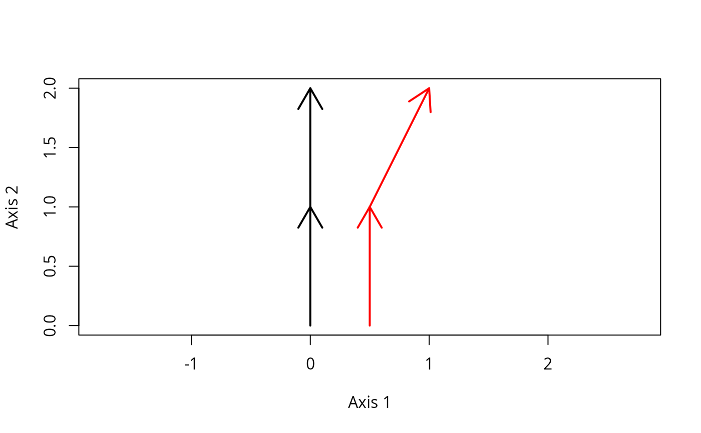

Set of functions to estimate metrics describing individual trajectories. Given input trajectory data, the set of functions that provide ETA metrics are:
Function
trajectoryLengthscalculates lengths of directed segments and total path lengths of trajectories.Function
trajectoryLengths2Dcalculates lengths of directed segments and total path lengths of trajectories from 2D coordinates given as input.Function
trajectorySpeedscalculates speeds of directed segments and total path speed of trajectories.Function
trajectorySpeeds2Dcalculates speeds of directed segments and total path speed of trajectories from 2D coordinates given as input.Function
trajectoryAnglescalculates the angle between consecutive pairs of directed segments or between segments of ordered triplets of points.Function
trajectoryAngles2Dcalculates the angle between consecutive pairs of directed segments or between segments of ordered triplets of points.Function
trajectoryDirectionalitycalculates (for each trajectory) a statistic that measures directionality of the whole trajectory.Function
trajectoryInternalVariationcalculates (for each trajectory) a statistic that measures the variability between the states included in the trajectory.Function
trajectoryMetricsevaluates several trajectory metrics at once.Function
trajectoryWindowMetricsevaluates several trajectory metrics on subtrajectories defined using moving windows.
Usage
trajectoryLengths(x, relativeToInitial = FALSE, all = FALSE)
trajectoryLengths2D(
xy,
sites,
surveys = NULL,
relativeToInitial = FALSE,
all = FALSE
)
trajectorySpeeds(x)
trajectorySpeeds2D(xy, sites, surveys = NULL, times = NULL)
trajectoryAngles(
x,
all = FALSE,
relativeToInitial = FALSE,
stats = TRUE,
add = TRUE
)
trajectoryAngles2D(
xy,
sites,
surveys,
relativeToInitial = FALSE,
betweenSegments = TRUE
)
trajectoryDirectionality(x, add = TRUE, nperm = NA)
trajectoryInternalVariation(x, relativeContributions = FALSE)
trajectoryMetrics(x, add = TRUE)
trajectoryWindowMetrics(x, bandwidth, type = "surveys", add = TRUE)Arguments
- x
An object of class
trajectories.- relativeToInitial
Flag to indicate that lengths or angles should be calculated with respect to initial survey.
- all
A flag to indicate that angles are desired for all triangles (i.e. all pairs of segments) in the trajectory. If FALSE, angles are calculated for consecutive segments only.
- xy
Matrix with 2D coordinates in a Cartesian space (typically an ordination of ecological states).
- sites
A vector indicating the site corresponding to each ecological state.
- surveys
A vector indicating the survey corresponding to each ecological state (only necessary when surveys are not in order).
- times
A numeric vector indicating the time corresponding to each ecosystem state.
- stats
A flag to indicate that circular statistics are desired (mean, standard deviation and mean resultant length, i.e. rho)
- add
Flag to indicate that constant values should be added (local transformation) to correct triplets of distance values that do not fulfill the triangle inequality.
- betweenSegments
Flag to indicate that angles should be calculated between trajectory segments or with respect to X axis.
- nperm
The number of permutations to be used in the directionality test.
- relativeContributions
A logical flag to indicate that contributions of individual observations to temporal variability should be expressed in relative terms, i.e. as the ratio of the sum of squares of the observation divided by the overall sum of squares (otherwise, absolute sum of squares are returned).
- bandwidth
Bandwidth of the moving windows (in units of surveys or times, depending on
type)- type
A string, either "surveys" or "times", indicating how windows are defined.
Value
Functions trajectoryLengths and trajectoryLengths2D return a data frame with the length of each segment on each trajectory and the total length of all trajectories.
If relativeToInitial = TRUE lengths are calculated between the initial survey and all the other surveys.
If all = TRUE lengths are calculated for all segments.
Functions trajectorySpeeds and trajectorySpeeds2D return a data frame with the speed of each segment on each trajectory and the total speeds of all trajectories. Units depend on the units of distance matrix and the units of times of the input trajectory data.
Function trajectoryAngles returns a data frame with angle values on each trajectory. If stats=TRUE, then the mean, standard deviation and mean resultant length of those angles are also returned.
Function trajectoryAngles2D returns a data frame with angle values on each trajectory. If betweenSegments=TRUE, then angles are calculated between trajectory segments, alternatively, If betweenSegments=FALSE, angles are calculated considering Y axis as the North (0°).
Function trajectoryDirectionality returns a vector with directionality values (one per trajectory). If nperm is not missing, the function returns a data frame
with a column of directional values and a column of p-values corresponding to the result of the permutational test.
Function trajectoryInternalVariation returns data.frame with as many rows as trajectories, and different columns: (1) the contribution of each individual state to the internal sum of squares (in absolute or relative terms); (2) the overall sum of squares of internal variability;
(3) an unbiased estimator of overall internal variance.
Function trajectoryMetrics returns a data frame where rows are trajectories and columns are different trajectory metrics.
Function trajectoryWindowMetrics returns a data frame where rows are midpoints over trajectories and columns correspond to different trajectory metrics.
Details
Ecological Trajectory Analysis (ETA) is a framework to analyze dynamics of ecological entities described as trajectories in a chosen space of multivariate resemblance (De Cáceres et al. 2019). ETA takes trajectories as objects to be analyzed and compared geometrically.
The input distance matrix d should ideally be metric. That is, all subsets of distance triplets should fulfill the triangle inequality (see utility function is.metric).
All ETA functions that require metricity include a parameter 'add', which by default is TRUE, meaning that whenever the triangle inequality is broken the minimum constant required to fulfill it is added to the three distances.
If such local (an hence, inconsistent across triplets) corrections are not desired, users should find another way modify d to achieve metricity, such as PCoA, metric MDS or non-metric MDS (see vignette 'Introduction to Ecological Trajectory Analysis').
If parameter 'add' is set to FALSE and problems of triangle inequality exist, ETA functions may provide missing values in some cases where they should not.
Function trajectoryAngles calculates angles between consecutive segments in degrees. For each pair of segments, the angle between the two is defined on the plane that contains the two segments, and measures the change in direction (in degrees) from one segment to the other.
Angles are always positive, with zero values indicating segments that are in a straight line, and values equal to 180 degrees for segments that are in opposite directions. If all = TRUE
angles are calculated between the segments corresponding to all ordered triplets. Alternatively, if relativeToInitial = TRUE angles are calculated for each segment with respect to the initial survey.
Function trajectoryAngles2D calculates angles between consecutive segments in degrees from 2D coordinates given as input. For each pair of segments, the angle between the two is defined on the plane that contains the two segments, and measures the change in direction (in degrees) from one segment to the other.
Angles are always positive (O to 360), with zero values indicating segments that are in a straight line, and values equal to 180 degrees for segments that are in opposite directions.
If all = TRUE angles are calculated between the segments corresponding to all ordered triplets. Alternatively, if relativeToInitial = TRUE angles are calculated for each segment with respect to the initial survey.
If betweenSegments = TRUE angles are calculated between segments of trajectory, otherwise, If betweenSegments = FALSE, angles are calculated considering Y axis as the North (0°).
Function trajectoryDirectionality evaluates the directionality metric proposed in De Cáceres et al (2019). If nperm is supplied, then the function
performs a permutational test to evaluate the significance of directionality, where the null hypothesis entails a random order of surveys within each trajectory. The p-value corresponds to the proportion of
permutations with a directional value equal or larger than the observed.
References
De Cáceres M, Coll L, Legendre P, Allen RB, Wiser SK, Fortin MJ, Condit R & Hubbell S. (2019). Trajectory analysis in community ecology. Ecological Monographs 89, e01350.
Author
Miquel De Cáceres, CREAF
Anthony Sturbois, Vivarmor nature, Réserve Naturelle nationale de la Baie de Saint-Brieuc
Nicolas Djeghri, UBO
Examples
#Description of entities (sites) and surveys
entities <- c("1","1","1","2","2","2")
surveys <- c(1, 2, 3, 1, 2, 3)
times <- c(0, 1.5, 3, 0, 1.5, 3)
#Raw data table
xy <- matrix(0, nrow=6, ncol=2)
xy[2,2]<-1
xy[3,2]<-2
xy[4:6,1] <- 0.5
xy[4:6,2] <- xy[1:3,2]
xy[6,1]<-1
#Draw trajectories
trajectoryPlot(xy, entities, surveys,
traj.colors = c("black","red"), lwd = 2)

#Distance matrix
d <- dist(xy)
d
#> 1 2 3 4 5
#> 2 1.000000
#> 3 2.000000 1.000000
#> 4 0.500000 1.118034 2.061553
#> 5 1.118034 0.500000 1.118034 1.000000
#> 6 2.236068 1.414214 1.000000 2.061553 1.118034
#Trajectory data
x <- defineTrajectories(d, entities, surveys, times)
#Trajectory lengths
trajectoryLengths(x)
#> S1 S2 Path
#> 1 1 1.000000 2.000000
#> 2 1 1.118034 2.118034
trajectoryLengths2D(xy, entities, surveys)
#> S1 S2 Path
#> 1 1 1.000000 2.000000
#> 2 1 1.118034 2.118034
#Trajectory speeds
trajectorySpeeds(x)
#> S1 S2 Path
#> 1 0.6666667 0.6666667 0.6666667
#> 2 0.6666667 0.7453560 0.7060113
trajectorySpeeds2D(xy, entities, surveys, times)
#> S1 S2 Path
#> 1 0.6666667 0.6666667 0.6666667
#> 2 0.6666667 0.7453560 0.7060113
#Trajectory angles
trajectoryAngles(x)
#> S1-S2 mean sd rho
#> 1 0.00000 0.00000 0.000000e+00 1
#> 2 26.56505 26.56505 1.490116e-08 1
trajectoryAngles2D(xy, entities, surveys, betweenSegments = TRUE)
#> t1-t2
#> 1 0
#> 2 26.565051177078
trajectoryAngles2D(xy, entities, surveys, betweenSegments = FALSE)
#> Axis2-t1 Axis2-t2
#> 1 0 0.00000
#> 2 0 26.56505
#Several metrics at once
trajectoryMetrics(x)
#> trajectory n t_start t_end duration length mean_speed mean_angle
#> 1 1 3 0 3 3 2.000000 0.6666667 0.00000
#> 2 2 3 0 3 3 2.118034 0.7060113 26.56505
#> directionality internal_ss internal_variance
#> 1 1.0000000 2.000000 1.000000
#> 2 0.8524164 2.166667 1.083333